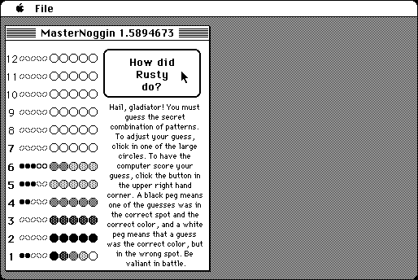

Download
Master.zip (82K) MasterNoggin 1.5894673 repackaged into a zipped hfs disk image and checksum file. The disk image can be mounted with Mini vMac.
Master.bin (82K) MasterNoggin 1.5894673 in the original format.
copyright: David Hjelle, "Supervised by Stephen Doering."
mod date: Jul 5, 1997
license: freeware
official url :
The Hjelle Jar ~ Software
"A version of the classic board game Master Mind."

If you find these downloads useful, please consider helping the Gryphel Project, which hosts them.
Here are the md5 checksums for the downloads, signed with Gryphel Key 5:
--------- GRY SIGNED TEXT --------- 88b8a733d0c98915a7f49fa0c8a49ece Master.zip 5d829e6758be1279f0497391518d3c3d Master.bin ------- BEGIN GRY SIGNATURE ------- Gry/4Xa8CFcUzxdN/FdkzBj6XmiQ1qMzRH1AnZoeAtguBQ7+a2KQ+g4JOHGzLivM sgYAQFPJ4NXN/b+0fVsBPighg/uKUBTuGIVkAUMfBeqdeH33x1sfeZ2lt98CBqWV YiGjDoSn32y6G5vF6Az049pUYAUpSRiFButwx0HzJCTZ+dXdp16HW0hmprq+65I0 -------- END GRY SIGNATURE --------